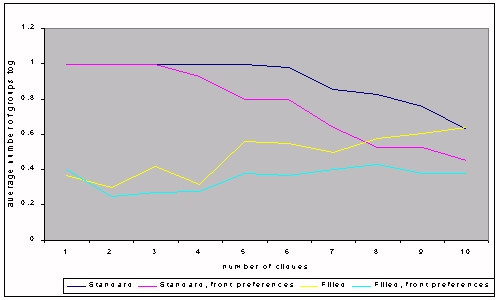

The assignment given to us was to examine the process of how students seat themselves in a lecture hall. We took this task as an opportunity to examine an issue of broader relevance: the replication of social networks. For example, most students have friends, and like to sit by their friends. Unfortunately, in a crowded lecture hall, this is not always possible -- sometimes the seat next to your friend is filled by a stranger.
In this homework we build a model that simulates seating in a lecture hall in order to ask which conditions favor (and disfavor) the replication of social networks. We concentrate on two factors: the existence of individuals outside of social networks, and the existence of secondary preferences (that only come into play when the primary goal of social networks can't be accomplished).
In order to explore this issue, we construct a simple agent-based model of agent behavior in a lecture hall. The lecture hall has six rows of five seats, with capacity for thirty students (note that these numbers were selected ad hoc, and that given more time, more configurations would have been explored). Since we are interested in the organization of social structure during the seating process, we assume a pre-existing friendship structure among the agents, and it is the primary goal of the agents to sit next to their friends as possible. In one interpretation, they put their best efforts to the preservation of the preexisting social links.
We assume that agents arrive in the auditorium one at a time, in random order at discrete time steps. The agents choose where to sit according to the following algorithm
1. If there is an open seat to the left or right of a friend, sit in it.
2. Otherwise, if there is an open seat to the front or back of a friend, sit in it.
3. Otherwise, choose an open seat at random.
To simplify the model we will consider only a population partitioned into "cliques" of mutual friends. Again, due to time constraints we considered only cliques of size 3. To be more explicit, members of cliques are friends with and try to sit next to only other members of the clique. We believe that a more general networked structure would be interesting to consider in a larger project.
To this basic model we add two twists: first, we assume that sometimes there are people who are 'loners', which in this model implies that they choose their seat randomly. Secondly, we also consider the following modification of the above model: if the agents are unable to sit next to their friends, the have a mild preference to sit towards the front of the room (this applies to the 'loners' as well).
We ran the model under four conditions, each time varying the number of cliques (and thus how full the lecture hall was) from 1 to 10. The four conditions are:
The standard model, agents are all part of cliques, enter one at a time, and sit according to the rules described above. Same, but with seating preferences for the front The 'filled' model, the auditorium is filled by a mix of clique members and loners<\LI> Same, but with seating preferences for the front
Results of the simulations are presented below. The number of trials run varied from 10-30 per condition, again largely limited by time constraints. The y-axis represents the proportion of cliques that were able to sit together (all three members of a clique had to be together to count; just two doesn). The x-axis is the number of cliques in the simulation (so, moving right on the graph means filling the auditorium with larger numbers of cliques; 10 cliques gives 30 people which completely fills the audiutorium). In the 'filled' cases, there are always thirty people, what changes is the proportion of those people who are in cliques vs. loners.
 Again, we want are to examine the influnce of socially isolated individuals and secondary preferences (here, preferences for sitting towards front) on social network replication.
All runs range from just 1 group to 10 groups, which is on the x-axis, so there are 2 criteria remaining by which the runs are differing. The upper two curves are cases in which there are just group-people in the auditorium and the rest of the seats remain empty.
In the 'standard' case, the top curve, the students have no preference for a specific area in the classroom, and up to 5 groups, which is 50% of the available seats, all groups manage to stick together. For 6 groups there is a slight decline of the proportion of successful constellations, and it is going down to 63% for a filled auditorium with 10 groups. This result is unsurprising In the 'standard' case with front preferences, the performance is considerably declining, if everybody has a preference for the front rows and actually ends up somewhere in the front with a certain probability. If there are only 3 groups, their members sit together, but with more groups coming in, there is a sharp decline down to around 40% of successful groups (see 2nd curve to the top). The net effect is that the preference for the front makes it more difficult for the cliques to sit together; intuitively, since everyone initially crowds to the front instead of spreading out randomly open seats near people are harder to come by. In the 'filled' case, the second curve from the bottom, there are two things of note. First, the curve slopes up; this means that the higher the proportion of cliques, the easier it is for them to sit together. Secondly, it looks like when there is only one clique, things are bettter for the cliques than with two to three cliques (we would like more runs to see if this pattern holds to statistical significance; again, we must plead time constraints). In the 'filled' case with preferences for the front, the bottom curve, shows that here, as opposed to the 'standard' case, adding preferences for the front doesn't impact the abilitiy to cliques to sit together as much. There is slight change, but not as dramatic.
To sum up, socially isolated individuals usually hamper social network replication. And, secondary preferences can hinder network replication as well, as they introduce an additional constraint to the search process. However this effect is less pronounced when socially isolated individuals are present.
As future work we would like to consider how the degree of interconnection between friendship networks can influence the seating patterns and the efficiency of those outcomes. We will consider two extreme cases including (1) the case in which the friendship network consists of a partition of the population and (2) the case in which (symmetric) friendship bonds are formed randomly so that a person's friends may or may not be friends with each other. There is also a range of intermediate cases where each agent belongs to a clique, but also has friends outside that clique -- this gives us an intuitive, if ad hoc, measure of the 'tightness' of social cohesion of the groups. Across all these conditions, the expected number of friends (size of your clique plus outside friends) remains constant, as an attempt at normalization.
These friendship systems can be constructed in the following manner. To construct a system of type-(1) simply partition the population into C cliques of size N/C (constrained to integer values). To construct a system of type-(2), for each individual, select at random F others whom the individual "likes". Then create friendship bonds in the reverse direction to ensure that friendship is a symmetric relation. Finally eliminate enough of the bi-directional friendship bonds so that each individual has, on average, F friends. To construct a system with an intermediate degree of cliquiness, use the following steps. Create non-overlapping cliques of the desired size. Establish bi-directional friendship bonds between each ordered pair in a clique. For each individual, select at random others from outside the clique whom the individual "likes" so that the total potential friends for the individual is exactly F. Establish friendship bonds to ensure symmetry as before. Finally, eliminate enough bi-directional friendship bonds from the bonds existing outside the cliques, so that the average number of friends is F. Average aggregate statistics of the model with these friendship systems can be used to analyze seating patterns and efficiency properties as a function of cliquiness.
The model of seating may be applied to study social science problems. With little modification (instead of 'seat in lecture hall' read 'house in some city'), the model could be interpreted as one of neighborhood formation and segregation in cities (albeit with very high moving costs) among small, cohesive ethnic groups. Another potential application of a seating model is the location of Starbucks franchises. In this context friendship could be redefined as potentially one-directional and interpreted as a firm selling a complementary good or generating high foot traffic. For example a 'friend' of Starbucks may be a retail store or office building. Another potential application of a seating model might be political candidates locating their platforms in a two-dimensional space of political positions. A candidate may have intrinsic reasons for the location of her platform with respect to issue A, but she may also want to locate near a position with strong constituency support with respect to issue B in order to advance her A-agenda.